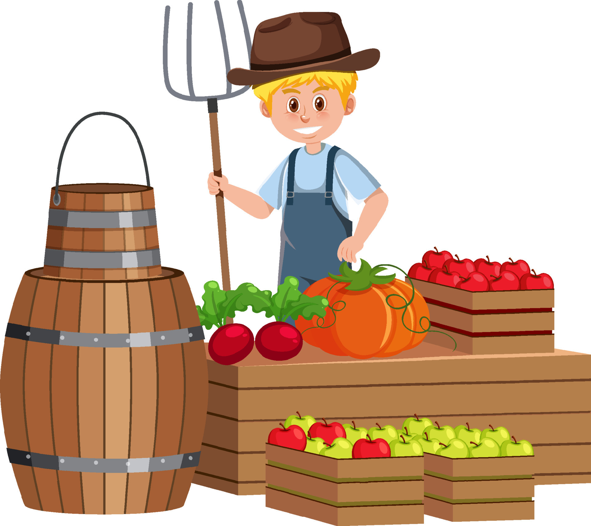

Discover farm-fresh produce sourced directly from local farmers, ensuring peak freshness and fair prices without middlemen. Our mission is to provide affordable, premium-quality fruits and vegetables while supporting sustainable farming practices. By choosing us, you contribute to local economies and environmental sustainability. Embrace transparency, community support, and a healthier way to shop with us.